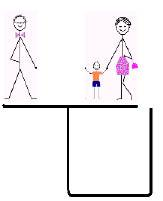

AİLENİZİN FİNANSAL GELECEĞİNİ NASIL KORURSUNUZ
Tasarruf etmek güzeldir, özellikle de anne babanız tarafından sizin için yapıldığında.
Winston Churchill
Kendinizin ve ailenizin finansal geleceğini korumanın bilinen en iyi yolu sigorta yaptırmaktır. Gerekli sigortaları yaptırarak;
Sigortanın finansal bir araç olarak gerekliliğinden daha önemlisi, hangi sigortadan ne kadar gerekli olduğudur. Sigortalar temel olarak ikiye ayrılır, hayat ve hayat dışı. Hayat sigortaları kişisel sigortalardır, hayat, kaza, sağlık sigortalarını kapsar. Hayat dışı sigortalar ise yangın, sorumluluk, kaza, nakliyat, makine montaj sigortaları olarak örneklenebilir. Kendimizin ve ailemizin geleceğini güvence altına almak için ihtiya. Duyduğıumuz şey, sigorta planlaması yapmaktır.
Sigortacılar arasında anlatılan bir hikaye vardır. Üç fabrikatör Kızıldeniz’de balık tutup tatil yapmaktadırlar. Bir tanesi der ki, "Geçenlerde fabrikamda çok büyük bir yangın çıktı, sahip olduğum her şey kül oldu. Neyse ki sigortam vardı ve sigorta şirketi bütün zararımı ödedi. Bu sayede şu anda burada balık tutuyor ve tatil yapıyorum". İkinci fabrikatör söze girer, "Sormayın, benim de başıma çok büyük bir felaket geldi, fabrikamda çok büyük bir patlama oldu ve sahibi olduğum her şey bir anda yerle bir oldu. Neyse ki benim de sigortam vardı ve sigorta şirketim bütün zararımı ödedi. Şimdi onların sayesinde ben de burada tatildeyim." Üçüncü fabrikatör de söz alır, "Ne tesadüf! Ben de büyük bir sel felaketiyle karşılaştım, sel fabrikamı ve içindeki her şeyi alıp götürdü. Neyse ki sigorta şirketi bütün zararımı karşıladı da şu anda ben de burada sizinleyim." Diğer iki fabrikatör büyük bir şaşkınlık için de ona bakarlar ve sorarlar: "Sel mi? Yangın çıkarmak, patlatmak neyse de, sen seli nasıl başlattın?!"
Bir sigortacı açısından yukarıdaki planlama örneği hiç de iyi olmasa da, sigorta yaptıran açısından planlamanın önemini iyi anlatıyor. Sigorta planlaması yapabilmek için öncelikle kendi ihtiyaçlarınızı ve şu anki finansal durumunuzu belirlemelisiniz. Evli ya da bekar olmanız, kendi işinizi yapıyor ya da maaşlı çalışıyor olmanız, kirada ya da kendi evinizde ikamet etmeniz, çocuğunuzun olup olmaması, yaşınız gibi faktörlerin hepsi sigorta ihtiyaçlarınız üzerinde ayrı ayrı etkilidir. Evliyseniz, bekar birine kıyasla sigortaya daha fazla ihtiyacınız vardır, çünkü finansal olarak bakmakla yükümlü olduğunuz bir aileniz vardır. Kendi işinizi yapıyorsanız, maaşlı bir çalışana göre sigortaya daha çok ihtiyacınız vardır, çünkü sabit bir geliriniz yoktur. Kirada yaşıyorsanız emlak sigortası yaptırmanız durumunda evde oluşabilecek hasarları cebinizden ödemekten kurtulabilirsiniz. Çocuklarınız varsa onların eğitim masraflarını ve evlenene kadar geçecek olan süreçteki giderlerini düşünerek daha fazla teminat ve güvence sahibi olmanız gerekebilir. Yaşınız gençse, orta yaşlı ya da yaşlı birine göre hem ödeyeceğiniz sigorta primleri hem de karşılığında elde edeceğiniz teminatlar bakımından daha avantajlısınızdır.
Sigorta planlamasının ikinci aşaması finansal hedeflerin belirlenmesidir. Hedeflerinizi daha iyi belirleyebilmek için sosyal güvenlik sisteminin çatısı altında hangi teminatlarınızın olduğunu bilmelisiniz. İşverenseniz BAĞ-KUR, kamu çalışanı iseniz Emekli Sandığı, maaşlı çalışansanız Sosyal Sigortalar Kurumu çatısı altında güvence sahibisinizdir. Bu kurumların sundukları emekli maaşları, maluliyet imkanları, hastalık tedavi masrafları zaten halka açıktır. Tavsiyem, sosyal güvenlik sisteminin kapsamadığı güvenceler için özel sigorta şirketlerinden faydalanmanız ve açıklarınızı bu şekilde kapatmanızdır. Sosyal güvenlik sisteminin karşılamadığı ihtiyaçlarınızı özel sigorta şirketlerinden temin ederek tam güvence sağlayabilirsiniz.
Sigorta planlamasının üçüncü aşaması bir eylem planı oluşturmaktır. İhtiyacınız olan sigorta miktarını belirleyip finansal hedeflerinizi koyduktan sonra açıklarınızı gerekli güvenceleri temin ederek kapatabilirsiniz. Eylem planınızı hazırlarken gelecekte değişebilecek ihtiyaçlarınızı da göz önünde bulundurmanızda fayda vardır. Sadece bugünkü koşulları düşünerek kendinizi güvence altına aldığınızda teminatlarınız yetersiz kalabilir.
Son olarak kendinizin ve ailenizin geleceğini güvence altına almak için eylem planını hazırlarken tespit ettiğiniz ihtiyaçları temin etmek kalıyor. İhtiyaçlarınızı temin etme konusunda hangi sigortaların size uygun olduğu konusunda güvenebileceğiniz ama aynı zamanda da yetkin bir sigorta acentesine danışmanızı öneririm.
Sigorta acentelerine ülkemizde yeterince değer verilmediğini düşünüyorum. Birçoğumuz sigorta acentemizin hayatınızda ne kadar önemli bir yere sahip olduğunun farkında değilizdir. Doktorunuz sağlık durumunuzu bilir. Mali müşaviriniz mali durumunuzu bilir. Avukatınız hukuki sorunlarınızı bilir. Sigorta acenteniz ise bunların hepsini birden bilir. Bu sebeple sigorta acentesinin doğru ve yetkin biri olması çok önemlidir. İyi ve size danışmanlık yapan bir sigorta acenteniz varsa finansal geleceğiniz emin ellerdedir. Bunun başka bir avantajı daha vardır. Sigorta acenteniz her yıl düzenli olarak sizin sigorta ihtiyaçlarınızı ücretsiz olarak revize edecek ve sizin ihtiyaçlarınıza en uygun güvenceleri en ekonomik koşullarda size sunabilecektir. Finansal yaşam döngüsünün hangi alanında olursa olsun, bütün tarafların kazandığı bir model kurmak en kârlı seçenektir.
HAYAT SİGORTASINA NE KADAR İHTİYACINIZ VAR
Birine miras bırakacağınızı söylediğinizde yapabileceğiniz
en nazik şey bir an önce ölmektir.
Samuel Butler
Hayat sigortasının ne demek olduğunu ve hayat sigortasına ihtiyacınız olup olmadığını size bir şekil yardımıyla anlatacağım. Hayat sigortalarının en önemli özelliği nedir biliyor musunuz? Birçok insan hayat sigortasının ne anlama geldiğini bile bilmez ama hayat sigortası vardır. Çünkü hayat sigortasını kendisi satın almamıştır, sadece ona satılmıştır! Hayat sigortanız varsa ve ihtiyacınızı tespit ederek kendiniz isteyerek bunu aldıysanız sizi kutlarım.
Hayat sigortası, finansal olarak size bağımlı olarak yaşayan insanların, sizin yaşamınızı kaybetmeniz durumunda sosyal refah düzeyini korumayı amaçlar. İki tane işlevi vardır, birincisi koruma, ikincisi ise birikim. Koruma fonksiyonu ile, sizin yaşamınızı kaybetmeniz durumunda kanuni varislerinize bir tazminat ödenmesini sağlarken, birikim fonksiyonu ile de emeklilik hakkını elde etmenizi ya da birikim yapıp ihtiyacınız olduğu bir anda o birikimlerinizi kullanmanızı sağlar. Aşağıda bir şekil var, şekilde bir anne ve yanında bir çocuk, bir baba, bir yoksulluk çukuru ve bir de kaldıraç görüyorsunuz. Aşağıdaki şekilde görüldüğü üzere kaldıracın bir tarafında ve bir tarafında da anne ile çocuk olduğu sürece, baba da para kazanıyorsa kaldıraç dengededir. Bu kaldıraçtaki denge çok önemlidir çünkü dengenin bozulması durumunda anne ile çocuk yoksulluk çukuruna düşecektir.
 |
Peki diyelim ki ailede para kazanan ve geçimi temin eden kişi hayatını kaybetti, bu durumda sizce ne olur? Aşağıdaki şekilde ne olacağını görüyorsunuz, babayı ortadan kaldırdığınızda kaldıraçtaki denge bozulur ve anne ile çocuğu yoksulluk çukuruna düşebilir. İşte hayat sigortası da tam burada devreye girer. Eğer ailenin geçimini sağlayan kişi yaşamını kaybederse ve hayat sigortası da varsa, onun finansal boşluğunu poliçesinde belirtilen miktardaki para ile doldurmaya çalışır. Tabii ki giden geri gelmez ve herhangi bir aile ferdinin yeri manen doldurulamaz, ancak hayat sigortası en azından ailenin kimseye muhtaç olmamasını sağlamaya çalışır ve onların acılarını biraz olsun hafifletmeye yarar. Eğer babanın kaldıraçtaki yerine baba yaşamını kaybedip oradan gittiğinde onun hayat sigortasında belirtilen miktardaki parayı koyarsanız kaldıraç dengede kalmaya devam eder. Hayat denge üzerine kuruludur. Hayat sigortasına bakış açısı da burada ayrı bir önem kazanıyor, bazen ben ölürsem ne kadar para alacağım diye sorabiliyor insanlar. Cevabı çok basit, maalesef henüz ahirete havale sistemi geliştirilmediği için beş kuruş alamayacaklar ancak kanuni varisleri teminat olarak poliçelerinde belirtilen miktarı alacaklar. Bu durumda ikinci bir soru gelebiliyor, madem ben almayacağım o parayı niye hayat sigortası yaptırayım ki? Bu sorunun da cevabı çok basit, hayat sigortalarının koruma sağlamasının yanında aynı zamanda birikim ve emeklilik imkanları vardır. Dilerseniz siz hayattayken de birikmiş olan paranızı nakit olarak çekebilir ya da 10 yıllık bir süre boyunca hayat sigortası primlerinizi ödediyseniz emeklilik hakkınızı kullanarak kendinizi maaşa bağlayabilirsiniz.
Yukarıdaki iki şekil hayat sigortasının mantığını yeterince açıklıyor diye düşünüyorum. Herkesin hayat sigortasına ihtiyacı var mıdır? Hayır, herkesin hayat sigortasına ihtiyacı yoktur. Aşağıdaki durumlarda hayat sigortasına ihtiyacınız yoktur:
Aşağıdaki durumlarda da hayat sigortasına ihtiyacınız vardır:
Hayat sigortaları konusunda son olarak kişisel tavsiyem hangi kategoride olursanız olun, imkanınız varsa bir hayat sigortasına muhakkak sahip olmanız yönündedir. Bekar olan ve bakmakla yükümlü olduğu kimsesi olmayan birinin teorik olarak hayat sigortasına ihtiyacı yoktur. Ancak böyle birisi bugünden hayat sigortasına sahip olursa yarın evlendiğinde elinde hem hazır birikimi olmuş, hem ailesinin teminatını yükseltmiş, hem de emekliliğe daha fazla yaklaşmış olur ki, evlilik ve çocuk sahibi olmanın getirdiği maliyetler zaten emekliliği ve hayalleri yeterince erteleyebilir.